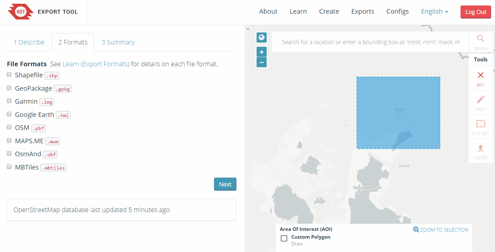
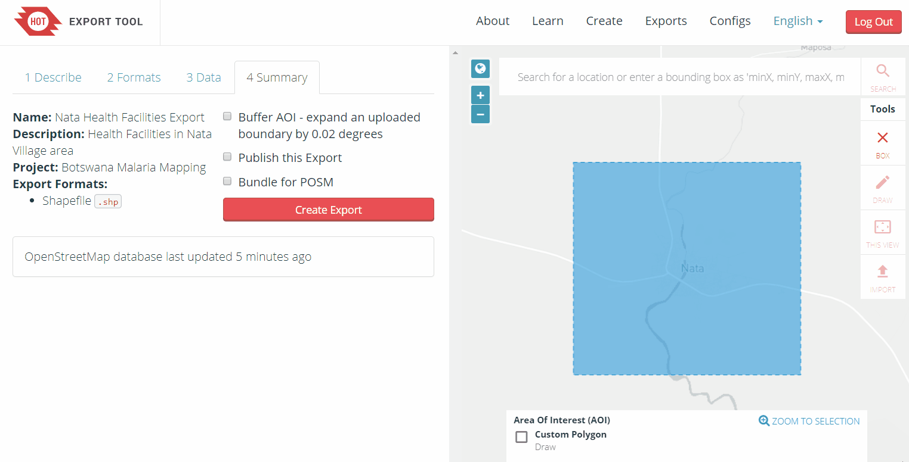

6.1 Hot Export Tools
Course Objectives
This section will explain on how to use HOT Export Tool to download OSM data in your preferred area. By the end of this, you will be able to:
- Understand overview of HOT Export Tool
- Understand how to export OSM data using HOT Export Tool
Learning Activities
The HOT Export Tool is an open service that creates customized extracts of up-to-date OSM data in various file formats, such as ESRI shapefiles (.shapefile), google KML (.kml), GeoPackage (.gpkg) dan MBTiles (.mbtiles). We can select the area and specific categories that we necessary. Download and use the data simply by crediting the © OpenStreetMap contributors. Anyone can create a custom OpenStreetMap export with the Export Tool - just register an account. You can register with an OpenStreetMap account from OpenStreetMap.org and a valid email address. Learning resources and walkthroughs can be found at the HOT Export Tool Learn page.
Using the HOT Export Tool
Tools and Technology Needed:
- Computer
- Internet Connection
- OSM Account
To get started, open an internet browser and go to: https://export.hotosm.org/ To use the HOT Export Tool, you will need to log in using your OSM username and password, by clicking the red “Log In” button in the top right-hand corner.

Select ‘Create’ in the top menu.

Select an AOI on the map by searching a place, uploading a .geojson, or drawing an area in the map to the right. To draw an area of interest, zoom in and find a location of your choice (i.e. Zwedru, Accra). Once you have zoomed in to your area of interest, select the box tool from the Tools Menu on the right. Click one corner to start drawing a box, then select the opposite corner to complete the box. This is your AREA OF INTEREST that will be downloaded.

On the left hand side of the window, fill out the “1 Describe” options:
- Name: “[YOUR OSM USERNAME] Test Export”
- For example, “jessbeutler Test Export”
- Description (optional)
- Project (optional)
- For example, “Government Inclusion Project”

Select preferred file type in the ‘Formats’ tab. If downloading data to use in a GIS program, try downloading a .shp file.

In the ‘Data’ tab, select the types of OSM data to export. Recommend types to try: ‘Education’, ‘Government’, ‘Healthcare’.

In the ‘Summary’ tab, select ‘Create Export’. While processing, a “Running” status will show. Processing time depends on export size. Once completed, the file will be available for download & sent to your email.

| 💡 Did you know? 💡 |
|---|
| This process will take several minutes to process depending on how large your downloaded area, type of OSM data you export, and the density of OSM data. City-sized regions should be a few minutes - larger regions can take upwards of 20 minutes |
When the export process is completed, the ‘Status’ bar will be updated to ‘COMPLETED’. Download the file by clicking on the file link, as highlighted below. For shapefiles, open the downloaded .zip folder and save it to a folder of your choice on your computer. You can now use the shapefile in a GIS software such as QGIS.
[Quiz] Check Your Knowledge
-
Below are the file types that you can download in the HOT Export Tool, except:
a. Shapefile (.shp)
b. Geopackage (.gpkg)
c. Google KML (.kml)
d. MBTiles (.mbtiles)
e. Image (.jpg .png or .JPEG)
Answer: 1.E
Activity Checklist
By the end of this section, you should be able to:
- Understand what is HOT Export Tool
- Using HOT Export Tool to download OSM data
Additional resources
Training presentation